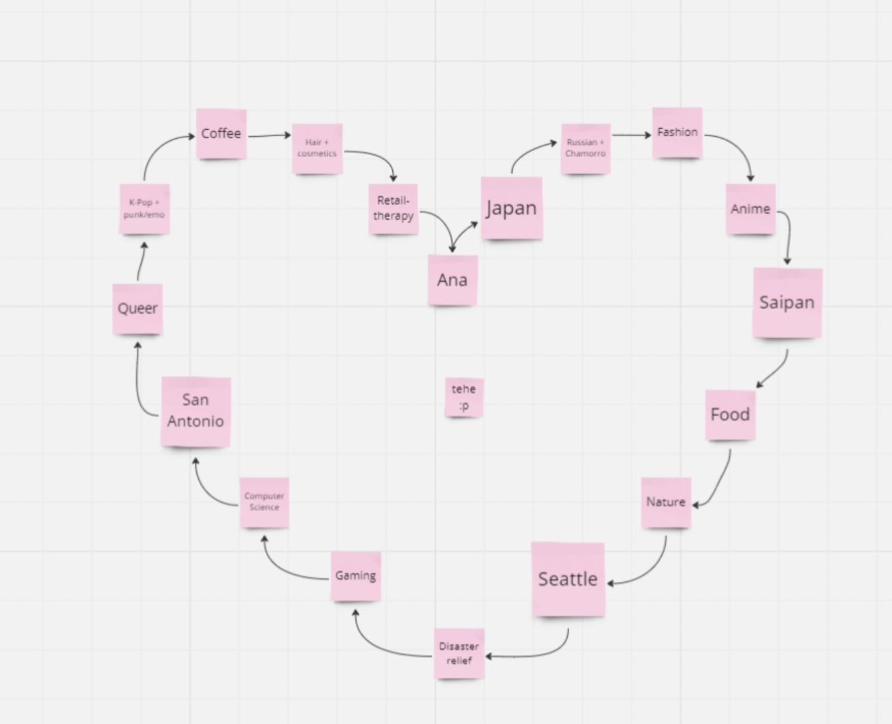
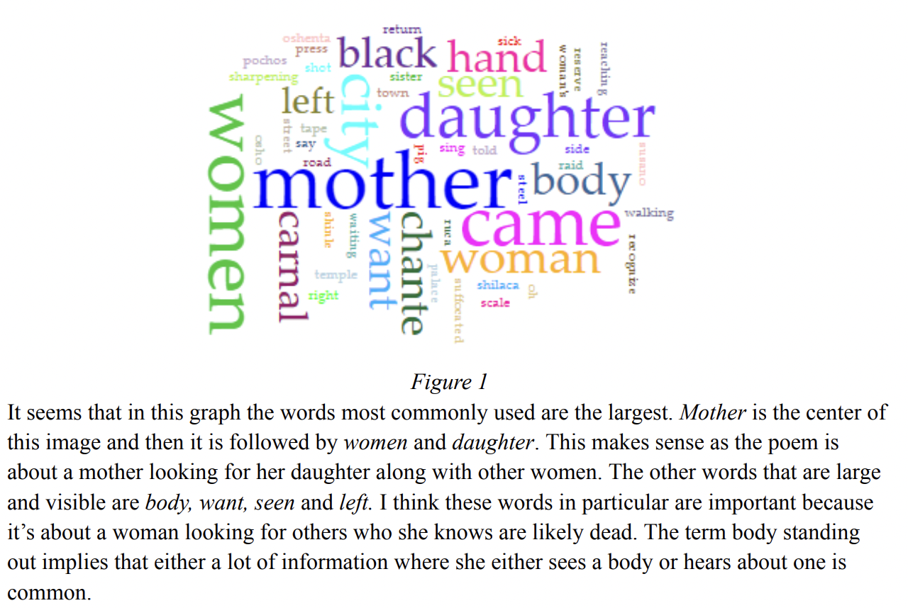
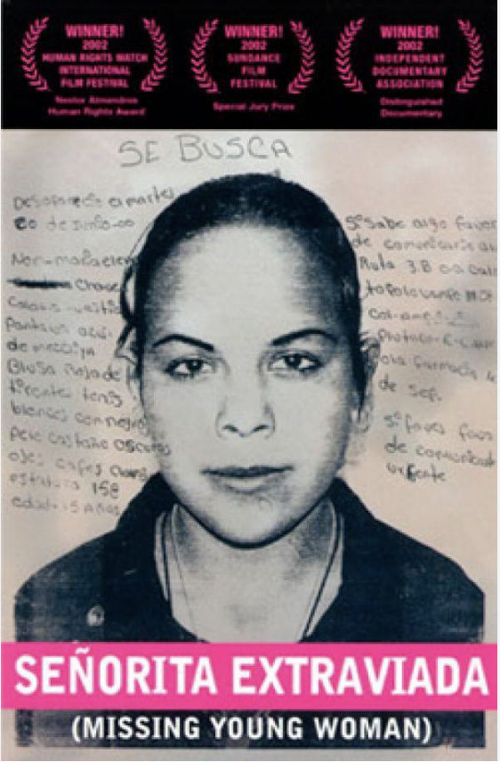
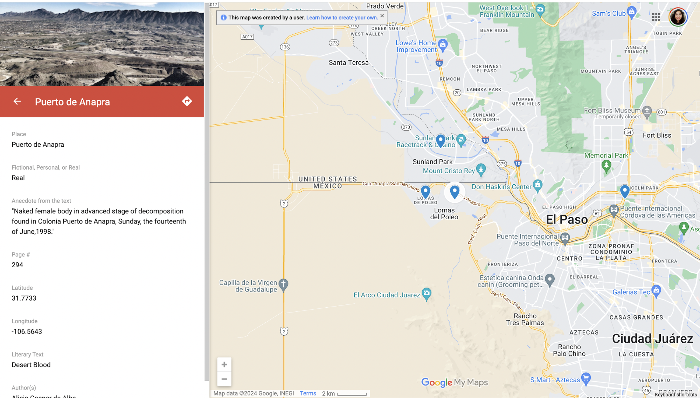
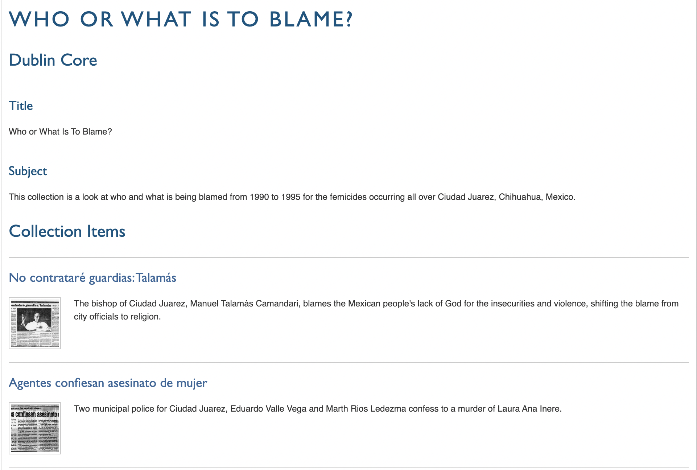

Introduction
This dataset includes information about feminicdes, or cases of women who have been murdered based on their gender, at the U.S.-Mexico border between 1993-1998. The original data comes from the book El Silencio Que La Voz De Todas Quiebra by Rohry Benitez, Adriana Candia, Patricia Cabrera, Guadalupe de la Mora, Josefina Martínez, Isabel Velázques, and Ramona Ortiz. The data was digitzed and translated into English by a group of undergradudate students in the course “Border Women Literature & Feminist Cartographies,” which was taught by Sylvia Fernández and Paulina Hernandez Trejo at the University of Texas at San Antonio. Additional datasets that were developed in the class are also featured on this website.
This essay discusses gender-based violence and sexual violence. The content may be distressing or triggering for some readers.
Original dataset (1999): Rohry Benitez, Adriana Candia, Patricia Cabrera, Guadalupe de la Mora, Josefina Martínez, Isabel Velázques, and Ramona Ortiz
Translated and digized dataset (2023): Jasbeth Medrano (Leader), Judith Ordonez, Carolina Vlaun, Alex Sanchez, and Samuel Hille
TipCreative Commons License
This work is licensed under CC BY 4.0

History of Gender-Violence at the Border
Some of the material in this section comes from forthcoming work, specifically Fernández Quintanilla & Bejarano’s “Fuerza Feminista: Confronting Intersectional Data Violence by Archiving the Movement against Anti-Feminicides in the Paso del Norte Region” (forthcoming 2025) and Hernández-Trejo, Esmaeili, and Medrano’s “Border Women Literature & Feminist Cartographies: Experiences and Responsible Approaches to Feminicide Data Through Data Science and Digital Humanities” (forthcoming 2025).
For over thirty years, the northern Mexican state of Chihuahua bordering Texas and New Mexico has experienced multiple forms of violence across its rural and urban regions. Communities have been besieged with cartels and gender-based violence, and in Ciudad Juárez, international corporations pay workers less than livable wages. An overwhelming amount of attention has focused on Ciudad Juárez for cases of feminicide—that is, the murder of women based on their gender—and scholars have pointed to the early 1990s as a period when these murders gained international recognition. During this time, families of disappeared and murdered women, as well as activists, human rights defenders, journalists, academics, and national and international human rights regimes, clamored over the hundreds of women and girls who disappeared and were never found, or whose remains were located near or within Ciudad Juárez (Monárrez Fragoso, 2009; Fregoso and Bejarano, 2010; Lagarde y de los Ríos, 2010; Driver, 2015; Lozano, 2019). While concentrated attention was given to the feminicides at that time, over the years, less focus has been given to the galvanizing efforts of local people to demand responses from authorities to resolve these atrocities (Fernández Quintanilla and Bejarano, forthcoming 2025)
Despite the increased social awareness, local community activism, formation of local organizations and nonprofits, and foreign academic interventions, there is still no satisfactory response from Mexican authorities regarding Mexican feminicides or feminicidios. Among the notable and progressive changes that have occurred to bring justice to the murdered women and girls is the legal classification of feminicide, or feminicidio, which was coined and inserted into Mexican legal framework by Marcela Lagarde y de los Ríos and collaborators (Monárrez Fregoso, Rosa-Linda, and Bejarano 2020). The term feminicide emerged from Diana Russell and Jill Radford’s feminicide: The Politics of Woman Killing (1992), which proposed a feminist approach in addressing the disproportionate killing of women by differentiating these murders from general homicides. Although the direct translation of feminicide to Spanish is femicidio, Lagarde y de los Ríos argued that it was not enough to classify these murders as separate from homicide; thus, she coined feminicidio. By naming feminicide, feminicidio, Lagarde y de los Ríos expanded on the definition of feminicide to “name the ensemble of violations of women’s human rights, which contain the crimes against and the disappearances of women” (2020). The term feminicidio acknowledges that the killing of women is an institutional and systemic violence, meaning that feminicidios occur because of the authorities’ omission, negligence, and/or collusion with the assailants which inhibits women’s access to justice and thereby contributes to impunity.
Feminist activists, digital activists, activist-scholars, and everyday people world-wide are vigorously working to engage in data-keeping mobilizations to document and protest feminicides and gender-based violence. These data-keeping resistance movements collect data to contest the intersectional violence that authorities create and foment. Feminist data projects galvanize record-keeping efforts to maintain and even recover data and make visible the extent of gender-based violence in communities across the Global South and Global North. There are several prominent feminist data projects documenting gender-based violence in existence across the Americas. These projects primarily focus on data that is counting feminicides from specific BIPOC women’s groups or regions, and visualizing these crimes through spreadsheets, repositories, and other forms of data visualization such as maps and infographics. Collectively, the data from these projects have served the anti-feminicide movement as tools to counter the erasure or minimization of feminicides that authorities will often claim. Digital projects like Ellas Tienen Nombre and Ecos del Desierto and archival collections like the Ester Cano Chavez Collection are powerful examples of how civil society organizations, everyday people, and families take the responsibility of collecting this feminist data and doing the work of the authorities. They provide transparency and an unofficial record of data with the use of digital technologies and collaborative practices with professionals in libraries and archival studies, visual studies, geographical information systems, web developers, and other allies. Thus, these types of resources provide a digital record with critical data that impacts the lives of many families and serves as a tool to seek justice (Fernandez Quintanilla and Bejarano, forthcoming 2025)
WHERE DID THE DATA COME FROM? WHO COLLECTED IT?
Dataset Translation & Digitization
A group of undergraduate students at the University of Texas at San Antonio digitized and translated the original feminicide dataset provided by El Silencio de la Voz Que a Todas Nos Quiebra as part of the Honor’s course, “Border Women Literature & Feminist Cartographies” (Fall 2023) taught by Sylvia Fernández Quintanilla and Paulina Hernández-Trejo. The students are Jasbeth Medrano (Political Science), Carolina Vlaun (English), Judith Ordonez (Film and Media), Alex Sanchez (Computer Science), and Samuel Friedrich (Kinesiology).
Original Dataset Authors
This dataset was included, in part, at the end of the book, El Silencio Que La Voz De Todas Quiebra, by Rohry Benitez, Adriana Candia, Patricia Cabrera, Guadalupe de la Mora, Josefina Martínez, Isabel Velázques, and Ramona Ortiz. The book was created to bring awareness to the severe under-reporting of feminicide, with an emphasis on providing a platform for mothers to tell their daughter’s stories. It was published by Ediciones del Azar A.C. in November 1999. There were 1001 copies distributed, and no editions have been published since.

At the end of the book, the authors included an image of a spreadsheet with all the cases of feminicde they were able to locate. The spreadsheet was very grassroots and needed to fit within a print book format.


The spreadsheet is only accessible through this book, making it hard for others to study this data or advance this cause. Though there is a scanned version of the book circulating on the internet, the spreadsheet featured in the book is not complete. Additionally, the printed book is not on sale anymore, and it requires a special process to request the book from libraries that have a copy.
El Silencio intentionally humanizes the women and girls in the dataset through testimonios of their mothers and family members. According to its introductory chapter, El Silencio’s larger objective was not just the contribution of the dataset, but rather an intimate encounter between the testimonies of the victims’ mothers and the dataset.
This book does not feature any of the perpetrators or suspects, aligning with its objective of highlighting the lives, not the deaths, of these women and girls. Thus, El Silencio highlights the lives of Erendira, Sagrario, Olga Alicia, Elizabeth, Adriana, Silvia Elena, and Argelia in detail in between the chapters discussing the creation of the dataset. As the authors reiterate, Ciudad Juárez “should be remembered not only for its feminicides, but also for its women who live a common life, perhaps like our own, one like your mother, your sister or your daughter….the victims should never be considered ‘the problem’ or stigmatized for their deaths; the silence, self-censorship, complicity, and negligence are what should outrage and shame us” (Benítez et al. 1999, 6).
WHY WAS THE DATA COLLECTED? HOW IS THE DATA USED?
Originally the data was collected due to the lack of response from Mexican authorities and the United States government, and their failure to take seriously the cases of missing and murdered women in Cd. Juarez, Chihuahua and its surrounding area. Faced with this silence, the mothers and family members of victims, as well as activists, human rights defenders, and others, worked individually and collectively to learn ways to gather information to fight for justice and policy changes, and to work on different cases that have not yet been solved.
The original spreadsheet in El Silencio was created by the authors of the book, who were writers and journalists working for local newspapers (_El Diario _and El Norte) in Cd. Juarez. They started to collect data related to missing and murdered women since 1990 through newspaper reports and government reports, corroborating with some of the mothers and family members through their testimonios. This spreadsheet was one of the first kinds of data that accounted for the feminicides in Cd. Juarez and its surrounding area in the early 1990s when these cases started to gain national and international attention. This data has been used for legal cases and for further investigation of the cases documented, as well as for other activists and scholars to continue advocating for justice in physical and digital spaces through initiatives that keep track of this counterdata [dignazio_counting_2024]. Some examples are:
- Accountant and founder of Casa Amiga, Esther Chavez Cano, who collected all the newspapers and documents of cases of feminicides. Part of the collection was donated to Special Collection in New Mexico State University; the rest is in Casa Amiga.
- Activist and professor Julia Monarrez, author of Trama de una Injusticia: Feminicidio Sexual Sistémico en Ciudad Juárez, who has been working on a database with detailed information of cases in the 90s and more recently.
- Activist Ivonne Ramirez, creator of Ellas Tienen Nombre, who worked on a database of feminicides from 1993 to the present and visualized them in a digital map.
For the “Border Women and Feminist Cartography” (Fall 2023) course, the printed spreadsheet of El Silencio was chosen to be translated into English and digitized with additional information found in the digital record to enable a larger audience to have access to this data. There is a need to update materials created in earlier era in order to advance the processing and accessibility of previous data work.
WHAT’S IN THE DATA?
The data includes a chronology of the cases of missing and murdered women in Cd. Juarez from 1993 to 1998. In English and Spanish, each dataset contains specific details of each case (137 in total) including:
- Expediente (Case number)
- Edad (Age)
- Nombre (Name)
- Hallada (Date found)
- Desapareció (Datails of disappearance)
- Lugar de Hallazgo (Place found)
- Características Físicas (Physical characteristics)
- Datos de su Vida (Facts About the Victim’s Life)
- Causa de Muerte (Cause of death)
- Caracteristicas de muerte: posición, Estado (Characteristics of Death: position, state)
- Detalles Vestimenta (Clothing details)
- Presunto(s), responsable(s) (Potential attackers)
- Caso (Case)
- Datos Incongruentes (Incongruencies)
- Artículos (Articles)
- Fotos (Photos)
- Notas (Notes)
HOW WAS THE DATA COLLECTED?
The original data was collected through research in newspapers reporting the cases, testimonios with the mothers and family members, and through authorities’ reports and other legal documents. By consulting with and researching various sources, Rohry Benitez, Adriana Candia, Patricia Cabrera, Guadalupe de la Mora, Josefina Martínez, Isabel Velázques, and Ramona Ortiz (S Taller de Narrativa de Ciudad Juárez) compiled the data of each case together.
Students included additional data collected through web research related to news reports about the cases published locally and internationally. Students also produced English translations with an eye toward choosing words that best represent the meanings in Spanish; a consideration of terminology used by activists and those involved in the movement; and an effort to avoid the dehumanization of these women. Relatedly, any image or article on the internet that reinforced the interpretation of these cases as death bodies, pieces of body or disposable bodies was not included. Thus, the process of making this dataset into a digital and bilingual format followed previous research and observations from feminist scholars and human rights defenders to use ethical and responsible practices when working with data related to gender violence and feminicides across geopolitical, digital and linguistic borders.
Jasbeth Medrano, the student leader overseeing the digitization and translation of the dataset, elaborated on some of the translation choices that they made: > We…wanted to translate the information from Spanish to English to ensure we could reach a larger audience. Each of these parts required a particular level of care and ethics, especially when translating. For example, there were certain abbreviations in the original dataset that my group assumed for the purpose of transcribing (i.e., my group assumed that “p. Negro” was referring to “pelo negro”, which we translated as “black hair”). We were also careful to not translate geographical locations, such as street names, because translating these points would result in inaccurate information (i.e. choosing to keep “Calle Oro” vs. “Gold Street”) (Hernández-Trejo, Esmaeili, and Medrano, forthcoming 2025).
WHAT DATA IS MISSING? HOW IS UNCERTAINTY HANDLED?
In the original spreadsheet, there is missing and non-identified data in the cases due to how the cases were handled by authorities where intersectional data violence was present by those in charge of the cases (Fernández Quintanilla and Bejarano, forthcoming 2025). Nevertheless, the authors of this spreadsheet made plenty of efforts to include the most accurate and humanized data from each case, especially by bringing to their methodology the testimonios of the mother and other family members.
While creating the digitized and translated dataset, the students realized that most of these cases are not documneted on the internet or in the digital record. The only ones that are present from the early 1990s are the ones that became internationally known, and for these cases, there are some news reports that still circulate. They realized that the cases of feminicide that are more present on the web are cases that are more recent and that have been the focus of digital activism and awareness-raising, often through hashtags and posts.
Future Directions
There are many ways that this dataset can be and should be expanded upon. We encourage further inquiry using this translated and digitized dataset for future projects related to transnational feminism, decolonial methodologies, and researching examples of grassroots counterdata. Some of the possible further explorations include using machine learning to find more information on the cases with missing data, which would further center the victims’ lives versus her cause of death. Information could include her achievements, her work, and her everyday life as a woman.
Additionally, these types of courses are very urgent and necessary in higher education as it prepares students to foster caring, ethical and responsible practices using, analyzing and designing technologies using data of violence issues that the world has been facing throughout centuries. In this course, we noticed that much of the sources were counterdata of gender violence and femincidies still exist in analog formats or in public spaces showing the need to foster solidarity initiatives that can work to digitize, digitally process, preserve and have accessibility protocols towards newspapers, letters, documents, photographs, artifacts, testimonios that hold a very valuable memory. Similarly, it is crucial to keep advocating for multilingual and translingual digital humanities and integrate materials and sources from different parts of the world in order to move out of the comfort zone and expose students to realistic research scenarios where data is multilingual (not just in English) and not easily accessible/legible.
References
Benítez, Rohry, Adriana Candia, Patricia Cabrera, Guadalupe de la Mora, Josefina Martínez, Isabel Velázquez, Ramona Ortiz, and S Taller de Narrativa de Ciudad Juárez, eds. 1999. El Silencio Que La Voz de Todas Quiebra: Mujeres y Víctimas de Ciudad Juárez. 1a ed. Chihuahua, México: Ediciones del AZAR.
“Border Women Literature and Feminist Cartography”
Designed and taught by Sylvia Fernández and Paulina Hernandez Trejo
Course students (2023): Jessica Corona, Johanna León, Aislinn Reichle, Sara Mosher, Jasbeth Medrano, Judith Ordonez, Carolina Vlaun, Alex Sanchez, Samuel Hille, Genesis Esquilin (Leader), Layla Smith, Kiri Avelar, Paris Cantu, Nicolas Rodriguez, Madee Puente-Bonilla, Julian Dehoyos, Jada Thomas, Lily Morrill, Jared Pond, Emily Malloy, Erin Garza, Joshua Scott, Ambonnay Rodriguez, Nilou Esmaeili, Jairo Samuda, Kai Pheonix, Anastasia Blanco, & Branden Jackson
In Fall 2023, with the support of a “Responsible Computing Challenge” award from the Mozilla Foundation and its partners, Sylvia Fernández and Paulina Hernandez Trejo revised the undergraduate course, “Border Women Literature and Feminist Cartography,” offering it to students from Data Science, History, English, Political Science, Spanish and Film and Media Studies in the Honor’s College and the College of Liberal and Fine Arts at the University of Texas at San Antonio.
The course was offered as a special topic, as well as interdisciplinary, collaborative and experiment-driven, where students explore and critically analyze a selected group of border women’s literary texts, archival material, oral histories, digital projects with datasets and databases of counterdata (D’Ignazio 2024) that addressed gender-based and related violence and feminicides at the US-Mexico border and other parts of the world. Through a close and distant reading analysis students enhance in the development of multilingual humanities datasets to explore a series of thematical feminist cartographies through transnational, intersectional, antiracist, geographical and historical frameworks. Additionally, students explore various methods and digital tools and software with public datasets to convert these excerpts into a series of informative critical data visualizations.
Throughout the course, relevant social, historical, cultural readings, digital material, visual aids, interviews and workshops with writers, critics, activists, project creators and data specialists were included to help students in their comprehension of the distinct and complex approaches and perspectives of humanities data in relationship with gender violence, transnational border issues and human rights. Overall, students engage in ethical and responsible ways of thinking and producing at the intersection of feminist studies, literary analysis, digital mapping and data science.

COURSE ACTIVITIES OVERVIEW
The course was divided into five modules and the final module. In every module the students had the opportunity to engage in different forms of collecting, analyzing and disseminating data from different sources, with various digital tools and through multiple scenarios.
**Module #1 Introduction to main concepts
Heridas abiertasà Mapeando nuestras identidades: Intersectionality, border identities, feminist and mapping practices.


Module #2: Text Analysis
Text Analysis à Female Identity Representations in Poetry & Newspapers: Introduction to text analysis and text mining with poems, songs and newspapers through a historical gender representation, cultural gender roles and gender violence lens.

Module #3: Geographical Data
Geographical Data à CounterData of Transborder Gender Violence in Literature, Films, Archives & Testimonio: Identification and analysis of geographical counterdata of feminicides and gender violence in printed texts and films.




**Module #4 Memory Data Work
Memory Data Work à Transnational Public and Digital Activism Against Feminicide/Feminicidio: Introduction to web scraping of hashtags in social media and public and digital activism analysis to generate data networks.

Module #5: Decolonizing Practices
Decolonizing Practices à Identifying and Visualizing Contextualized Data
Each student proposed a feminist cartography and presented the methodology and a pilot dataset that could be integrated to GIS or Storymap and visualize into a digital map.


Data Curation Final Projects
In the Final Module—>Atando cabos, students were divided into six teams and were assigned to create a responsible dataset in context under a particular theme discussed in this course. Every team was tasked with a different form of approaching data, thus deciding on a methodology that will work best under the scenario they faced. Throughout this process they encountered several challenges that exposed them work with missing, uncontextualized, wrong data, data in other languages than English, the digital divide, the pre-digital age, lack of information in the digital cultural record, and the need to do field work or work closely with individuals, community members or organizations involved. Additionally, they had great observations of future work that can be done with these datasets or to make this data more accessible in other platforms to better serve those who are advocating for justice in the public and political level, as well as to expand the research on this data of counting feminicides and human rights movements.
- Dataset #1: Tracing Feminicides in El Paso, Texas Using the Hispanic-American Newspaper Newsbank-Readex Collection
- Team: Jessica Corona (Leader), Johanna León, Aislinn Reichle, & Sara Mosher
- Project Link
- Dataset description: Since the beginning of society in the United States, stereotypes and representations of women have been created to oppress them. Among the most deeply rooted stereotypes in North American society about Latina women, we find those that have been most widely spread in newspaper sections: sections for the home where the differences between men and women are discussed, the praise of short hair as this represents a form of evolution to women but for society it removes a woman’s femininity etc. Sexist language within culture, customs and linguistic heritage means that we do not use language correctly and when we talk about gender equality, sexist language refers to those expressions that denigrate people because of their sex and regarding a series of attributes or functions within society, causing one gender to be positioned above the other. Therefore, sexist language is understood to be language that discriminates, above all, against women. This dataset organizes the data surrounding feminicide violence, language through culture, and feminism from the Hispanic American Newspapers in El Paso, Texas from 1900-1980. Making a counter database of what is happening in the US is important because creating work like this will allow us to understand and inform that gender violence is not only the death in the mexican side of the border but also the way that women are forced to behave or their roles in patriarchal society across borders. Collecting this data into dataset, allows for this information to become more accessible to a broader audience, and can be influential in the work of other students, scholars, activists, community, etc. Bringing awareness to how long gender violence has been occurring, specifically in El Paso, can show patterns and changes in how both feminicide is discussed, as well as how women are generally portrayed and spoken about in the media. It is important that this data is collected and made known of, to better understand the role that publications and news sources play in perpetuating gender violence through the way that they handle discussing these topics.
- Dataset dissemination: mapping, timeline, text analysis, digital exhibits, policy making
- Dataset #2: Digital and Translated Version of “El Silencio De La Voz Que a Todos Nos Quiebra Feminicidio” Printed Spreadsheet
- Team: Jasbeth Medrano (Leader), Judith Ordonez, Carolina Vlaun, Alex Sanchez, & Samuel Hille
- Project Link
- Dataset Description: As part of our assigned reading material, our class read “El Silencio Que La Voz De Todas Quiebra” by Rohry Benitez, Adriana Candia, Patricia Cabrera, Guadalupe de la Mora, Josefina Martínez, Isabel Velázques, and Ramona Ortiz. This book was created to bring awareness to the severe under-reporting of feminicide, with an emphasis of providing a platform for mothers to tell their daughter’s stories. This book wanted to humanize the cases of these victims due to the lack of emotion spreadsheets tend to convey. With this purpose in mind, our group decided to model our project with humanization at the forefront. At the end of the book, the authors provided a spreadsheet of all the cases they were able to locate. The spreadsheet was very grassroots and needed to fit the book page format. Additionally, it was only accessible through this book, ultimately making it very hard to obtain for any other people looking to advance this cause. Therefore, this group took on transcribing all cases on the spreadsheet onto an Excel sheet that could be accessible to anyone. We also translated this material from Spanish to English to ensure that people could read this data. However, apart from accessibility, we wanted to provide the contribution of finding articles and pictures of the mentioned victims to highlight the person rather than the details of the case. Though it was tough to find information on all the women, we found a couple links that have been included in the dataset.
- Dataset dissemination: visualizations, mapping, and policy-making
- Dataset #3: Geotestimonios Literary Dataset (Woman Hollering Creek by Sandra Cisneros and Stories of Survival by Alicia Gaspar de Alba).
- Team: Genesis Esquilin (Leader), Layla Smith, Kiri Avelar, & Paris Cantu
- Project Link
- Dataset Description: The project’s purpose is to collect data of two stories and structure it in a spreadsheet. The two stories assigned to work on were Woman Hollering Creek (1991) by Sandra Cisneros and The Mystery of Survival and Other Stories (1993) by Alicia Gaspar de Alba. These two literary texts contain a collection of short stories, so the group was assigned to work on specific short stories books and find the locations mentioned in them. In the Excel spread sheet there are two data sets; one that shows the locations mentioned in stories from Woman Hollering Creek and one that shows the locations that were mentioned in The Mystery of Survival. Since there were four of us, we split into two between the two stories and decided which stories we were going to cover. The purpose for these is to map the journey’s, each one painting different narratives of these individual women’s lives. In addition to collecting and organizing data from Woman Hollering Creek and The Mystery of Survival, the overarching purpose of our project extends beyond just the collection and compilation of the locations mentioned in the stories. To make these locations specific, the locations mentioned were checked if they were either real, fiction, or personal to the storyteller. For each entry it was added in the line the
location mentioned as well as the page number the line is from in the book, and the longitude and latitude coordinates if the location mentioned is real. Some notes were added on a few locations to make the audience know a bit more about the location or for them to have context on what the location means. Finally, some links were included with an image of what the real-life location looks like. Since most of the locations are either fictional or personal, they don’t have longitude and latitude coordinates tie with them. This was an important discussion within the team since one of the objectives was to create a comprehensive and visually engaging map that captures the journeys of the characters within these narratives. This dataset was the beginning steps as we encountered how to map data when we do not have exact coordinates. For instance, by pinpointing the specific locations referenced in each story, the project aims to provide a physical representation of the characters’ experiences, offering insights into the cultural and geographical contexts that shape their lives. This mapping project not only enhances our understanding of the individual stories but also allows for a broader exploration of the interconnected themes and shared elements between Woman Hollering Creek and The Mystery of Survival as both women authors are Latinas from Texas with a border identity reclaimed by both. Ultimately, the project seeks to offer a perspective on the diverse narratives within these two books, emphasizing the importance of women geographies, spaces of violence, and mapping the journey the women narrated in literature go through. - Dataset dissemination: mapping, literary analysis, spatial analysis, city planning
- Dataset #4: Films of Feminicide and/or Gender Violence Around the World
- Team: Nicolas Rodriguez (Leader), Madee Puente-Bonilla, Julian Dehoyos, Jada Thomas, & Lily Morrill
- Project Link
- Dataset Description: In the beginning of our dataset project, we wanted to focus on showcasing the wide range of films that showcase either the gratuitous violence toward women or show the mentality of how women would be treated in that era, we found more films to showcase in our project than expected. Though we are still predominantly shining our light on women and gender-based violence, we found other marginalized communities that can have their messages shared. Films like Killers of the Flower Moon showcase violence based on the Osage community and other similar native American communities, and Milk which shows an openly gay politician fighting to break out of the glass ceiling. These films, though show
different variations and levels of violence, intersectionality of present, it shows the trials these marginalized communities have faced. While engaged in the data collection and analysis we wanted to highlight these stories as well as leave it strictly to gender-based violence toward women. At the end, the dataset evolved and can be defined into four main takeaways/themes: personification of violence, definitions of violence, representation of genre, and missing stories. The first takeaway was the personification of violence; breaking this down into the on-screen, almost jarring reality of the possible glorification, stylization, and informative analysis of violence on screen. Our team felt that many of the films listed on the dataset could be argued and grouped into any one of the said narratives. This allows the audience to further their own definitions of gender violence in film. This does lead to the next takeaway, definitions. Throughout the construction of the dataset, we noticed a common theme with films depicting gender violence and/or having a main plot point be that of gendered violence. Many of the films listed are defined and categorized as “romances”. Films like Urban Cowboy, I, Tonya, and Lolita are all defined as romances; all these films depict graphic scenes of abuse, both physical and mental. Our question as a group is how does depicting and defining this film impact viewers? Are they glorifying? Are they stylizing? Are they informing? Our third takeaway was the cross-representation of genre. The dataset is broad - it includes films, biopics, documentaries, docuseries, horror, historical dramas, science fiction, and many more. We discovered that genre can be a visual but also narrative aid and representation with overall thematic analysis in relation to a film. Many of the films that we listed focused on and outlined meaningful, non-voyeuristic representational work on the issue of violence against women. All the films, across genres, in most ways, were symbolic of violating the heteronormative values of women and other marginalized groups in media; all following the steppingstones of action, resistance, and retribution. The last takeaway was the missing stories that we, as a group, found that were absent after completing the dataset. Again, it is a broad dataset, but there are still not enough individual, personal stories being represented. Many of our films fall under two categories: white, cis-female representation and wide-releases in English-speaking countries. There is a gap in our data that we must be aware of for the future of the dataset. The stories these films captured span from 1918 to the present, but there are still missing stories, missing people who need to be heard through the media of film. - Dataset dissemination: app, visualizations, image analysis, digital repository and digital exhibit
- Dataset #5: Books and Articles from Mexico and the U.S. Related to Feminicide and Gender Violence
- Team: Jared Pond (Leader), Emily Malloy (Leader), Erin Garza, Joshua Scott, & Ambonnay Rodriguez
- Project Link
- Dataset Description: This dataset project was to call attention to feminicide and gender violence in scholarly literature. We wanted to show that these women are remembered and were failed by their society and protectors. To make people uncomfortable enough to understand the seriousness of this topic, and to show that there are people keeping track and those who care. Our dataset tracks information on pieces of scholarly literature primarily from the U.S. and Mexico that relate to feminicide and gender violence. This dataset can be used to compare the types of literature and how it is represented across different publishing houses and countries. And the noticeable absence of information from publishing houses in Mexico. Some of our findings include the trait of Chicano, Hispanic, and Mexican authors publishing in areas other than Mexico, leading to the question of how much, and how hard the government and society itself tries to hide this violence. For example, some of the first books touching on these topics like El Silencio Que La Voz De Todas Quiebra or Cosecha de Mujeres had trouble finding a publisher and had even issues with some editors in charge. Our limitations included: authors not being on the internet, authors being hidden by other authors’ articles by other interpretations, and not being able to fully investigate and read every single piece of literature we listed. We also understand that we did not incorporate as many essays, articles, and books as there are in other databases as well. The next step for this project is to keep expanding on these works in any way possible. Those who work on this dataset may be able to make more connections between the data than we were able to see as their background knowledge is different than ours; or maybe even more resources than we do. We also recognize that we are missing data and possibly have inaccuracies, but it’s clear that feminicide has become more apparent globally and is something that nobody should be quiet about.
- Dataset #6: Murals and Public Monuments Related to Feminicide and Gender Violence
- Team: Nilou Esmaeili (Leader), Jairo Samuda, Kai Pheonix, Anastasia Blanco, & Branden Jackson
- Project Link
- Dataset Description: For this final dataset project, as a group we scavenged data pertaining to murals and monuments placed throughout Ciudad Juarez, Mexico, other various cities throughout Mexico, and internationally. The purpose of this dataset is to hopefully bring awareness to how frequently gender-based violence occurs especially in hotspots such as areas around the US-Mexican border, throughout Mexican cities, other countries of more conservative nature, more populated countries, etc… The list can go on, but the point is, that gender-based violence happens worldwide every day whether we witness it or not. Most of the data sources were from social media sites such as Instagram and X (Twitter). We encountered that when scrolling through these applications, there are a lot of bots, inappropriate content, threats, and unrelated posts. It was frustrating because social media is a good source to pull current information and data from, but navigating was annoying. Originally, our purpose would’ve been to create a program (code) to help the team members easily navigate and pick out the data needed throughout the loads of data and posts we go through on articles and social media sites. Unfortunately, it requires more advanced coding skills to create this program because it utilizes AI databases and even creating databases for the AI coding working with this data requires field work to process this data. Student comment: “I encounter having to interact with data in a way I have not even begun learning nor brushed up on in any of my classes. For reasons such as that, I scrapped my program completely and just manually mined data for our project. It would’ve been a nice way to make it easier for not only me and my groupmates, but my other classmates to use.”
- Dataset dissemination: mapping, image analysis, digital and 3D exhibits, virtual reality
Explore All Datasets
This page includes all the datasets that were created by students in “Border Women Literature & Feminist Cartographies” (Fall 2023) at the University of Texas at San Antonio. Descriptions and authors of each dataset are included below.
- Dataset #1: Tracing Feminicides in El Paso, Texas Using the Hispanic-American Newspaper Newsbank-Readex Collection
- Team: Jessica Corona (Leader), Johanna León, Aislinn Reichle, & Sara Mosher
- Dataset description: Since the beginning of society in the United States, stereotypes and representations of women have been created to oppress them. Among the most deeply rooted stereotypes in North American society about Latina women, we find those that have been most widely spread in newspaper sections: sections for the home where the differences between men and women are discussed, the praise of short hair as this represents a form of evolution to women but for society it removes a woman’s femininity etc. Sexist language within culture, customs and linguistic heritage means that we do not use language correctly and when we talk about gender equality, sexist language refers to those expressions that denigrate people because of their sex and regarding a series of attributes or functions within society, causing one gender to be positioned above the other. Therefore, sexist language is understood to be language that discriminates, above all, against women. This dataset organizes the data surrounding feminicide violence, language through culture, and feminism from the Hispanic American Newspapers in El Paso, Texas from 1900-1980. Making a counter database of what is happening in the US is important because creating work like this will allow us to understand and inform that gender violence is not only the death in the mexican side of the border but also the way that women are forced to behave or their roles in patriarchal society across borders. Collecting this data into dataset, allows for this information to become more accessible to a broader audience, and can be influential in the work of other students, scholars, activists, community, etc. Bringing awareness to how long gender violence has been occurring, specifically in El Paso, can show patterns and changes in how both feminicide is discussed, as well as how women are generally portrayed and spoken about in the media. It is important that this data is collected and made known of, to better understand the role that publications and news sources play in perpetuating gender violence through the way that they handle discussing these topics.
- Dataset dissemination: mapping, timeline, text analysis, digital exhibits, policy making
- Dataset #2: Digital and Translated Version of “El Silencio De La Voz Que a Todos Nos Quiebra Feminicidio” Printed Spreadsheet
- Team: Jasbeth Medrano (Leader), Judith Ordonez, Carolina Vlaun, Alex Sanchez, & Samuel Hille
- Dataset Description: As part of our assigned reading material, our class read “El Silencio Que La Voz De Todas Quiebra” by Rohry Benitez, Adriana Candia, Patricia Cabrera, Guadalupe de la Mora, Josefina Martínez, Isabel Velázques, and Ramona Ortiz. This book was created to bring awareness to the severe under-reporting of feminicide, with an emphasis of providing a platform for mothers to tell their daughter’s stories. This book wanted to humanize the cases of these victims due to the lack of emotion spreadsheets tend to convey. With this purpose in mind, our group decided to model our project with humanization at the forefront. At the end of the book, the authors provided a spreadsheet of all the cases they were able to locate. The spreadsheet was very grassroots and needed to fit the book page format. Additionally, it was only accessible through this book, ultimately making it very hard to obtain for any other people looking to advance this cause. Therefore, this group took on transcribing all cases on the spreadsheet onto an Excel sheet that could be accessible to anyone. We also translated this material from Spanish to English to ensure that people could read this data. However, apart from accessibility, we wanted to provide the contribution of finding articles and pictures of the mentioned victims to highlight the person rather than the details of the case. Though it was tough to find information on all the women, we found a couple links that have been included in the dataset.
- Dataset dissemination: visualizations, mapping, and policy-making
- Dataset #3: Geotestimonios Literary Dataset (Woman Hollering Creek by Sandra Cisneros and Stories of Survival by Alicia Gaspar de Alba).
- Team: Genesis Esquilin (Leader), Layla Smith, Kiri Avelar, & Paris Cantu
- Dataset Description: The project’s purpose is to collect data of two stories and structure it in a spreadsheet. The two stories assigned to work on were Woman Hollering Creek (1991) by Sandra Cisneros and The Mystery of Survival and Other Stories (1993) by Alicia Gaspar de Alba. These two literary texts contain a collection of short stories, so the group was assigned to work on specific short stories books and find the locations mentioned in them. In the Excel spread sheet there are two data sets; one that shows the locations mentioned in stories from Woman Hollering Creek and one that shows the locations that were mentioned in The Mystery of Survival. Since there were four of us, we split into two between the two stories and decided which stories we were going to cover. The purpose for these is to map the journey’s, each one painting different narratives of these individual women’s lives. In addition to collecting and organizing data from Woman Hollering Creek and The Mystery of Survival, the overarching purpose of our project extends beyond just the collection and compilation of the locations mentioned in the stories. To make these locations specific, the locations mentioned were checked if they were either real, fiction, or personal to the storyteller. For each entry it was added in the line the
location mentioned as well as the page number the line is from in the book, and the longitude and latitude coordinates if the location mentioned is real. Some notes were added on a few locations to make the audience know a bit more about the location or for them to have context on what the location means. Finally, some links were included with an image of what the real-life location looks like. Since most of the locations are either fictional or personal, they don’t have longitude and latitude coordinates tie with them. This was an important discussion within the team since one of the objectives was to create a comprehensive and visually engaging map that captures the journeys of the characters within these narratives. This dataset was the beginning steps as we encountered how to map data when we do not have exact coordinates. For instance, by pinpointing the specific locations referenced in each story, the project aims to provide a physical representation of the characters’ experiences, offering insights into the cultural and geographical contexts that shape their lives. This mapping project not only enhances our understanding of the individual stories but also allows for a broader exploration of the interconnected themes and shared elements between Woman Hollering Creek and The Mystery of Survival as both women authors are Latinas from Texas with a border identity reclaimed by both. Ultimately, the project seeks to offer a perspective on the diverse narratives within these two books, emphasizing the importance of women geographies, spaces of violence, and mapping the journey the women narrated in literature go through. - Dataset dissemination: mapping, literary analysis, spatial analysis, city planning
- Dataset #4: Films of Feminicide and/or Gender Violence Around the World
- Team: Nicolas Rodriguez (Leader), Madee Puente-Bonilla, Julian Dehoyos, Jada Thomas, & Lily Morrill
- Dataset Description: In the beginning of our dataset project, we wanted to focus on showcasing the wide range of films that showcase either the gratuitous violence toward women or show the mentality of how women would be treated in that era, we found more films to showcase in our project than expected. Though we are still predominantly shining our light on women and gender-based violence, we found other marginalized communities that can have their messages shared. Films like Killers of the Flower Moon showcase violence based on the Osage community and other similar native American communities, and Milk which shows an openly gay politician fighting to break out of the glass ceiling. These films, though show
different variations and levels of violence, intersectionality of present, it shows the trials these marginalized communities have faced. While engaged in the data collection and analysis we wanted to highlight these stories as well as leave it strictly to gender-based violence toward women. At the end, the dataset evolved and can be defined into four main takeaways/themes: personification of violence, definitions of violence, representation of genre, and missing stories. The first takeaway was the personification of violence; breaking this down into the on-screen, almost jarring reality of the possible glorification, stylization, and informative analysis of violence on screen. Our team felt that many of the films listed on the dataset could be argued and grouped into any one of the said narratives. This allows the audience to further their own definitions of gender violence in film. This does lead to the next takeaway, definitions. Throughout the construction of the dataset, we noticed a common theme with films depicting gender violence and/or having a main plot point be that of gendered violence. Many of the films listed are defined and categorized as “romances”. Films like Urban Cowboy, I, Tonya, and Lolita are all defined as romances; all these films depict graphic scenes of abuse, both physical and mental. Our question as a group is how does depicting and defining this film impact viewers? Are they glorifying? Are they stylizing? Are they informing? Our third takeaway was the cross-representation of genre. The dataset is broad - it includes films, biopics, documentaries, docuseries, horror, historical dramas, science fiction, and many more. We discovered that genre can be a visual but also narrative aid and representation with overall thematic analysis in relation to a film. Many of the films that we listed focused on and outlined meaningful, non-voyeuristic representational work on the issue of violence against women. All the films, across genres, in most ways, were symbolic of violating the heteronormative values of women and other marginalized groups in media; all following the steppingstones of action, resistance, and retribution. The last takeaway was the missing stories that we, as a group, found that were absent after completing the dataset. Again, it is a broad dataset, but there are still not enough individual, personal stories being represented. Many of our films fall under two categories: white, cis-female representation and wide-releases in English-speaking countries. There is a gap in our data that we must be aware of for the future of the dataset. The stories these films captured span from 1918 to the present, but there are still missing stories, missing people who need to be heard through the media of film. - Dataset dissemination: app, visualizations, image analysis, digital repository and digital exhibit
- Dataset #5: Books and Articles from Mexico and the U.S. Related to Feminicide and Gender Violence
- Team: Jared Pond (Leader), Emily Malloy (Leader), Erin Garza, Joshua Scott, & Ambonnay Rodriguez
- Dataset Description: This dataset project was to call attention to feminicide and gender violence in scholarly literature. We wanted to show that these women are remembered and were failed by their society and protectors. To make people uncomfortable enough to understand the seriousness of this topic, and to show that there are people keeping track and those who care. Our dataset tracks information on pieces of scholarly literature primarily from the U.S. and Mexico that relate to feminicide and gender violence. This dataset can be used to compare the types of literature and how it is represented across different publishing houses and countries. And the noticeable absence of information from publishing houses in Mexico. Some of our findings include the trait of Chicano, Hispanic, and Mexican authors publishing in areas other than Mexico, leading to the question of how much, and how hard the government and society itself tries to hide this violence. For example, some of the first books touching on these topics like El Silencio Que La Voz De Todas Quiebra or Cosecha de Mujeres had trouble finding a publisher and had even issues with some editors in charge. Our limitations included: authors not being on the internet, authors being hidden by other authors’ articles by other interpretations, and not being able to fully investigate and read every single piece of literature we listed. We also understand that we did not incorporate as many essays, articles, and books as there are in other databases as well. The next step for this project is to keep expanding on these works in any way possible. Those who work on this dataset may be able to make more connections between the data than we were able to see as their background knowledge is different than ours; or maybe even more resources than we do. We also recognize that we are missing data and possibly have inaccuracies, but it’s clear that feminicide has become more apparent globally and is something that nobody should be quiet about.
- Dataset #6: Murals and Public Monuments Related to Feminicide and Gender Violence
- Team: Nilou Esmaeili (Leader), Jairo Samuda, Kai Pheonix, Anastasia Blanco, & Branden Jackson
- Dataset Description: For this final dataset project, as a group we scavenged data pertaining to murals and monuments placed throughout Ciudad Juarez, Mexico, other various cities throughout Mexico, and internationally. The purpose of this dataset is to hopefully bring awareness to how frequently gender-based violence occurs especially in hotspots such as areas around the US-Mexican border, throughout Mexican cities, other countries of more conservative nature, more populated countries, etc… The list can go on, but the point is, that gender-based violence happens worldwide every day whether we witness it or not. Most of the data sources were from social media sites such as Instagram and X (Twitter). We encountered that when scrolling through these applications, there are a lot of bots, inappropriate content, threats, and unrelated posts. It was frustrating because social media is a good source to pull current information and data from, but navigating was annoying. Originally, our purpose would’ve been to create a program (code) to help the team members easily navigate and pick out the data needed throughout the loads of data and posts we go through on articles and social media sites. Unfortunately, it requires more advanced coding skills to create this program because it utilizes AI databases and even creating databases for the AI coding working with this data requires field work to process this data. Student comment: “I encounter having to interact with data in a way I have not even begun learning nor brushed up on in any of my classes. For reasons such as that, I scrapped my program completely and just manually mined data for our project. It would’ve been a nice way to make it easier for not only me and my groupmates, but my other classmates to use.”
- Dataset dissemination: mapping, image analysis, digital and 3D exhibits, virtual reality.
ASSIGNMENT #1
Part 1: Gender Violence and Femincides Definitions and Testimonios
Read the “Preface” and Eva Arce’s Testimonio from Terrorizing Women: Feminicide in the Americas. Read El Silencio Que La Voz De Todas Quiebra and your assigned testimonio below. As you read, connect your testimonio (the Una Vida chapters) with the introduction.
As you read, consider the following questions/prompts for reflection:
- According to the “Preface”, what is feminicide?
- What legal and political occurrences contribute to feminicide?
- Having read the “Preface” of Terrorizing Women, how does this chapter contextualize each testimonio about the daughter’s disappearance?
Part #2: Maps and Databases of Counterdata of Feminicides
In teams analyze the map and spreadsheet that is included at the end of El Silencio Que La Voz De Todas Quiebra (students are provided with a copy of this material) and compare it with the digital map of Ellas tienen nombre.
As you observe this data in analog format and the data in digital format, consider the following questions/prompts for reflection:
- What are the areas where the missing and murdered women are being found?
- What is the data and metadata of each case in the spreadsheet different from the digital map?
- How is each case represented in the analog and digital map? What other ways would you propose to consider representing each case to move beyond the number or the dot?
- What is the difference between having this data in a spreadsheet and in a map? How do you engage with this data? What other visualizations will be important to create with this data?
- How can the data collected by these women be used for the fight for justice against gender violence and feminicides? What else can be included or should change?
Part #3: Converging Knowledge
In pair with a partner that reads and understands Spanish explore the project of Ecos del desierto and reflect on the testimonios and visual materials of each woman included in this timeline.
As you interacted with the data in this multimodal project, consider the following questions/prompts for reflection:
- How do you understand these cases and stories through testimonio, and visual material visualized and represented in this project different from a spreadsheet and a digital map?
- Why do you think there is only a short number of cases included in this project?
- Would it be important to include other cases you analyzed in the spreadsheet? What process would it take to put together other cases and represent them in this project visually?
ASSIGNMENT #2

Part #1: Text Mining Analog Periodicals
- Read “Transborder Discourse: The Articulation of Gender in the Borderlands in the Early Twentieth Century” by Clara Lomas.
- Visit your institution’s Special Collections or alternate archive and explore some analog newspapers and observe the representation of women.
Part #2: Text Mining Periodicals
- Using the Hispanic American Newspapers 1808-1980-Newsbank-Readex select a newspaper from a border city and find one that mentions women. (Many newspapers do not mention women directly, so it’s important to find one that covers this topic!)
- Through a text mining exercise, you will use the search feature to do a search of a series of keywords to localize the news/advertisements of these related topics. Examples of keywords: women, mujer, femenino, feminine, esposa, wife, asesinada, murdered, killed, girl, niña, educada, educated, trabajadora, hard working, etc.
- Then, analyze the newspaper section’s representations of women and pay close attention to the language of how the news/advertisements describe women. For example, how women are represented through descriptive language and cultural roles/responsibilities such as through gender roles, her work, what she is wearing, etc.
- Reflect on the type of violence that you find through these texts. Include an analysis of intersectionality (identities such as her race, her work, her age, etc.), situating this news/advertisement in the 19th and 20th centuries.
- Take a screenshot of your newspaper article and mark the section you analyzed.
Part #3: Reflecting
Briefly describe the following questions:
- What impacted you from the way women are represented in these Bordertown newspapers?
- Did you find or note a pattern with these representations of past and present violence towards women?
- Having read the Clara Lomas “Transborder Discourse” article for the week, answer the following question: how did periodicals (as a medium) help encourage rethinking women’s role in society?
- Currently, how are women represented in social media (i.e. our newspapers)? In what ways is it similar and/or different?
- *Add any further observations or analysis you would like to contribute.
ASSIGNMENT #3

Part #1: Analyzing Feminicide Data Using the Ester Chavez Collection
Choose ONE newspaper clipping from the Ester Chavez Collection box you were assigned. (You may use one that you explored previously!) After translating it, analyze and reflect on the content of the clipping. Think about how the victim, perpetrator, mother, etc. is represented and how these representations can be interpreted in responsible transborder data. Specifically, think about whether the victim is blamed for their murder and how the case is being described or reported. Write a reflection of 500 words including your additional research about the case as well as your responses to the questions mentioned. In your reflection, ensure to reference the readings and materials discussed.
Part #2: Digital Archival Curation
Choose ONE of the collections from the following project: Archiving Feminicide. Note that each collection has a different theme. Analyze the collection and the items included in each collection. Reflect on the message your chosen collection provides, considering that the archival curation was to convey the message of the pattern of “who or what is to blame?” and the pattern depicting the genealogy of the mother fighting for justice. Now that you have interacted with the newspaper clipping and other sources from the Esther Chavez Collection in Part 1, consider the different data stories that can be told through the digital archival curation of larger collections such as the Ester Chavez Cano Collection. What kind of data story through a curated collection would you propose? Write a reflection of 500 words that responds to the prompt, referencing the readings and materials discussed.